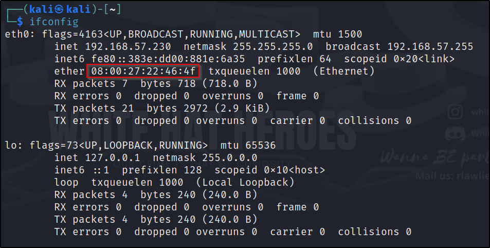

Mac Address
- Comes in layer 2 i.e Routing
- Mac Address is known as Media Access Controll
- its the pysical address of a machine/device in the network
- Consists of 6 pairs of hexadecimal values
- every Network Interface card has a Mac Address
- Every time IP address is not that usefull but when it comes to Mac address its very usefull
- Example :- 08:00:27:46:4f as given in the image below

- Mac address contains Identifiers
- the first 3 pair of an Mac address is know as identifiers
- We can get imformation such as Vendor , address,range ,etc
- In this case the vendor is PCS Systemtechnik GmbH